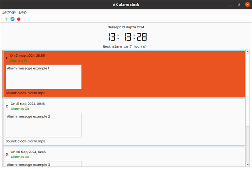
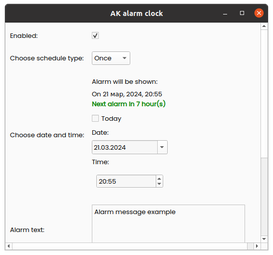
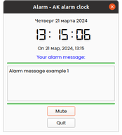
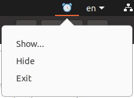

AK alarm clock
Alarm clock for Windows and Linux
version 0.1 alpha
Ask a question
Report a bug
Features:
Price: Free
Shedule types: Once, Weekly
Shows time to next alarm
Warns if edited alarm will newer be shown
Shows ads dialog at statrup
Tested on Window 10 and Ubuntu 20.24
Our forum:
Visit our forum...
Screenshots:
The main Ak alarm clock window in Ubuntu:
Click to enlarge...

Alarm editor window in Ubuntu:
Click to enlarge...

Alarm window in Ubuntu:
Click to enlarge...

Taskbar icon with menu in Ubuntu:

Application builds to be uploaded on 18 May, 2024 (hopefully)
Download for Ubuntu 20.04
Download for Windows 10 and higher
First List Item
Second list item
Quickstart:
Download appropriate appllication build and copy it to the location of your choice. You can also rename this file.
To start the application, doubleclick the downloaded file.
To hide the main window, click the button "x" in the topright corner of the window.
To show the main window either doubleclick the taskbar icon or choose the taskbar menu item "Show".
To add an alarm, use the main window button with green cross in the topleft part of the main window.
To remove an alarm, use the main window red circle button with white minus sign in the topleft part of the main window.
To edit an alarm, doubleclick it in the alarm list.
To exit the application, choose the taskbar menu item "Close".
Enjoy.
© Andrei Keino 2024
{kind=link}
{kind=link}
{kind=link}